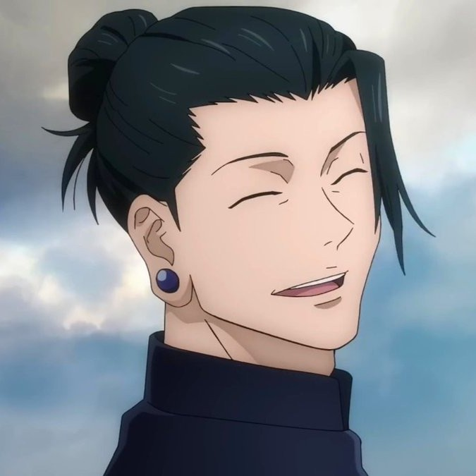
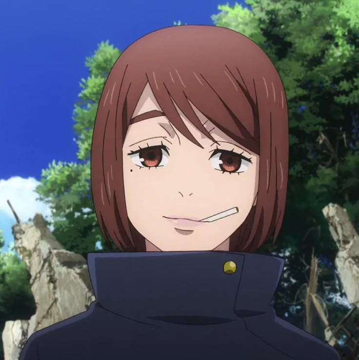
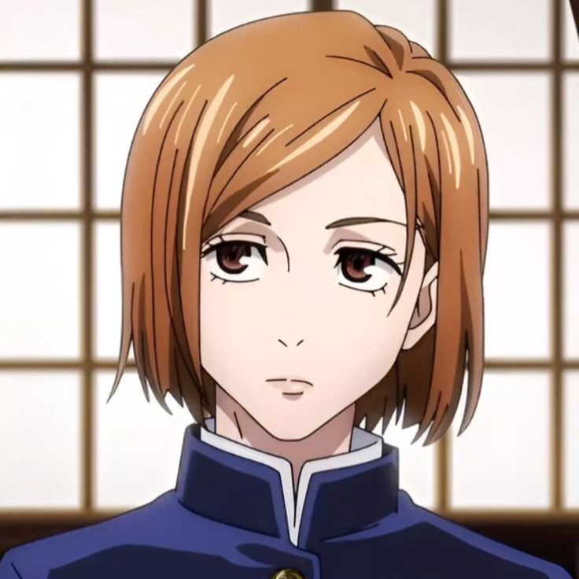
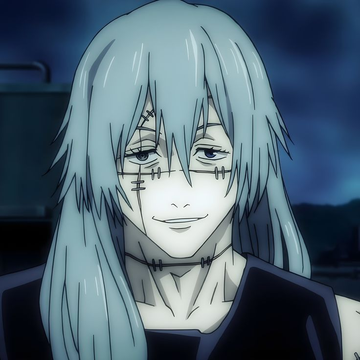

i made this webpage as a practice for me and tried my best to make the information as simple as possible so you won't be bored while readind in my wepage. you can call it a fan page but this the first best idea my mind came with. have fun and don't forget to put your rating in "about the creator" page.
Thanks !!

Suguru Geto was basically Gojo’s soulmate best friend back in the day — the type of duo everyone feared when they walked into a room. He was quiet, smart, and way calmer than Gojo, but he cared so much about people that it eventually broke him. One day he just snapped and decided, “Humans are the real curse,” and everything went downhill. Even though he became a villain, their old bond still hits harder than any sad anime OST.
Shoko Ieiri is the medic friend who permanently looks done with life. She knew Gojo and Geto in school and somehow survived their chaos. Now she’s the doctor who patches everyone up after battles and gets zero appreciation for it. She’s sarcastic, she smokes like her soul escaped long ago, and she’s probably the most emotionally stable one in the entire mess. Nanami Kento is the definition of “I don’t get paid enough for this.” He treats being a sorcerer like a boring job, and Gojo’s personality gives him migraines. But even though he pretends Gojo annoys him to death, he actually respects him a lot. Nanami is mature, responsible, tired, and honestly the only adult in the entire series.
Nanami Kento is the definition of “I don’t get paid enough for this.” He treats being a sorcerer like a boring job, and Gojo’s personality gives him migraines. But even though he pretends Gojo annoys him to death, he actually respects him a lot. Nanami is mature, responsible, tired, and honestly the only adult in the entire series.
 Utahime Iori is that friend who insists she hates you but still shows up every time you need something. Gojo teases her nonstop like an annoying big brother, and she complains nonstop like she’s filing a report. She’s a strong sorcerer, but Gojo makes sure she never lives peacefully. Deep down they’re a great team — even though she probably wants to slap him.
Utahime Iori is that friend who insists she hates you but still shows up every time you need something. Gojo teases her nonstop like an annoying big brother, and she complains nonstop like she’s filing a report. She’s a strong sorcerer, but Gojo makes sure she never lives peacefully. Deep down they’re a great team — even though she probably wants to slap him.
 Yuji Itadori is Gojo’s sweet chaotic golden retriever student. He’s friendly, goofy, and so full of heart that you forget he’s also carrying a demon king inside him. Gojo sees something big in him — almost like he thinks Yuji could change the whole jujutsu world. The universe keeps bullying Yuji, but he keeps smiling through it, and Gojo protects him like a proud mentor.
Yuji Itadori is Gojo’s sweet chaotic golden retriever student. He’s friendly, goofy, and so full of heart that you forget he’s also carrying a demon king inside him. Gojo sees something big in him — almost like he thinks Yuji could change the whole jujutsu world. The universe keeps bullying Yuji, but he keeps smiling through it, and Gojo protects him like a proud mentor.
 Megumi Fushiguro is the quiet, serious kid who acts annoyed by everyone but cares deeply. Gojo has this weird obsession with him — like he’s his favorite child — and he annoys him on purpose just to see him react. Megumi is insanely talented but doesn’t realize it, and Gojo acts like a proud dad anytime Megumi does something cool.
Megumi Fushiguro is the quiet, serious kid who acts annoyed by everyone but cares deeply. Gojo has this weird obsession with him — like he’s his favorite child — and he annoys him on purpose just to see him react. Megumi is insanely talented but doesn’t realize it, and Gojo acts like a proud dad anytime Megumi does something cool.

Nobara Kugisaki is the girl-boss friend with eyeliner sharp enough to slice curses. She’s confident, honest to a fault, and will insult you with style. Gojo respects her energy even if she looks at him like he’s a walking stress ball. She brings chaos, strength, and the perfect amount of sass to the group. Yuta Okkotsu is the sweet, awkward kid who looks harmless but is actually one of the most dangerous people alive. He’s quiet, polite, and soft-spoken… but if you make him mad, he’ll summon a vengeful spirit that can delete entire buildings. Gojo treats him like a little brother he’s incredibly proud of — like “yes, that’s MY terrifying child.”
Yuta Okkotsu is the sweet, awkward kid who looks harmless but is actually one of the most dangerous people alive. He’s quiet, polite, and soft-spoken… but if you make him mad, he’ll summon a vengeful spirit that can delete entire buildings. Gojo treats him like a little brother he’s incredibly proud of — like “yes, that’s MY terrifying child.”
 Toji Fushiguro is the walking red flag with muscles — Megumi’s dad and the guy who said “I don’t need cursed energy, I AM the weapon.” He’s basically a human cheat code: no cursed energy, but can destroy sorcerers like he’s swatting flies. He’s dangerous, unpredictable, and honestly one of the coolest disasters in the show. Gojo hates him… and respects him… and hates that he respects him.
Toji Fushiguro is the walking red flag with muscles — Megumi’s dad and the guy who said “I don’t need cursed energy, I AM the weapon.” He’s basically a human cheat code: no cursed energy, but can destroy sorcerers like he’s swatting flies. He’s dangerous, unpredictable, and honestly one of the coolest disasters in the show. Gojo hates him… and respects him… and hates that he respects him.

Mahito is that villain who acts like a child playing with knives — curious, playful, but terrifying because he has zero morals. He loves experimenting on humans like it’s a hobby, and he’s always smiling in the most disturbing way possible. He and Yuji have beef that goes beyond personal — it’s spiritual. Gojo would fold him instantly, but Mahito keeps slipping away like a slippery soap bar.___